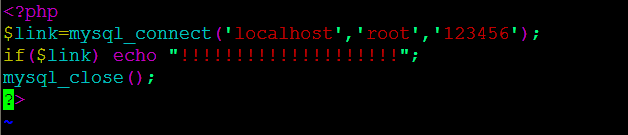

lamp环境搭建
一、准备工作
1、安装编译工具gcc、gcc-c++
注意解决依赖关系，推荐使用yum安装，若不能联网可使用安装光盘做为yum源——
# yum -y install gcc
# yum -y install gcc-c++
2、关闭系统RPM安装包的Apache、MySQL的服务
关闭启动的服务httpd、mysqld
# service httpd stop
# service mysqld stop
确定rpm包安装的httpd和mysqld不能开机自启动
chkconfig --level 2345 httpd（mysqld） off
3、关闭SELinux，允许防火墙80端口访问
使用setup
关闭防火墙和SElinux
1）关闭SELinux
# vi /etc/selinux/config
SELINUX=disabled * 若安装时没有禁用SELinux ，将enforcing改为disabled
修改后需重新启动Linux方可生效！
2）关闭防火墙Netfilter/iptables
因尚未做防火墙讲解，直接简单的关闭所有防火墙设置：
# iptables -F #如果没有禁用防火墙，默认80端口禁止访问
iptables -Z
iptables -X
4、关闭不必要自启动服务
# ntsysv
以下列出服务可保持自启动，未列出的服务都可以关闭：
atd
crond #atd、crond计划任务
irqbalance
microcode_ctl #系统irq端口调用，系统服务
network #网络设置
sendmail #邮件
sshd #远程管理
syslog #系统日志
5、拷贝源码包，解包解压缩
建议将LAMP环境安装源码包统一存放在一个目录下，如/lamp
可编写个批量处理脚本，一次性把所有.tar.gz的安装包解包解压缩
# vi tar.sh
cd /lamp
/bin/ls *.tar.gz > ls.list
/bin/ls *.tgz >> ls.list
for TAR in $(cat ls.list)
do
/bin/tar -zxf $TAR
done
/bin/rm ls.list
6、查看确认磁盘空间未满
df -h
#若/分区已满，可以移动安装包到其他分区或删除其他无用文件
如何确定报错：
1）安装过程停止
2）停止后，一页界面中出现error或者warning
如何确定安装成功：
进入安装目录，确认安装程序出现，就是成功
二、编译安装
每个源码包配置编译安装完成后，确认安装目录下是否生成安装文件
make clean
# 安装libxml2
Libxml2 是一个xml c语言版的解析器，本来是为Gnome项目开发的工具，是一个基于MIT License的免费开源软件。它除了支持c语言版以外，还支持c++、PHP、Pascal、Ruby、Tcl等语言的绑定，能在Windows、Linux、Solaris、MacOsX等平台上运行。功能还是相当强大的，相信满足一般用户需求没有任何问题。
libxml是一个用来解析XML文档的函数库。它用C语言写成, 并且能为多种语言所调用，例如C语言，C++，XSH。C#, Python，Kylix/Delphi，Ruby，和PHP等。Perl中也可以使用XML::LibXML模块。它最初是为GNOME开发的项目，但现在可以用在各种各样的方面。libXML 代码可移植性非常好，因为它基于标准的ANSI C库, 并采用MIT许可证。
#yum install -y libxml2-devel 如果报错，安装此包后再尝试安装
yum -y install python-devel 必须有
cd /lamp/libxml2-2.9.1
./configure --prefix=/usr/local/libxml2/
make
make install
# 安装libmcrypt
libmcrypt是加密算法扩展库。支持DES, 3DES, RIJNDAEL, Twofish, IDEA, GOST, CAST-256, ARCFOUR, SERPENT, SAFER+等算法。
cd /lamp/libmcrypt-2.5.8
./configure --prefix=/usr/local/libmcrypt/
make
make install
#需调用gcc-c++编译器，未安装会报错
# 安装libltdl，也在libmcrypt源码目录中，非新软件
cd /lamp/libmcrypt-2.5.8/libltdl
./configure --enable-ltdl-install
make
make install
# 安装mhash
Mhash是基于离散数学原理的不可逆向的php加密方式扩展库，其在默认情况下不开启。mhash的可以用于创建校验数值，消息摘要，消息认证码，以及无需原文的关键信息保存（如密码）等。
cd /lamp/mhash-0.9.9.9
./configure
make
make install
# 安装mcrypt
mcrypt 是 php 里面重要的加密支持扩展库。Mcrypt库支持20多种加密算法和8种加密模式
cd /lamp/mcrypt-2.6.8
LD_LIBRARY_PATH=/usr/local/libmcrypt/lib:/usr/local/lib
#Export LD_LIBRARY_PATH=/usr/local/libmcrypt/lib:/usr/local/lib
./configure --with-libmcrypt-prefix=/usr/local/libmcrypt
#以上为一条命令。LD_LIBRARY_PATH用于指定libmcrypt和mhash的库的位置。
--with-libmcrypt-prefix用于指定libmcrypt软件位置
make
make install
#mcrypt没有安装完成，这是php的模块，需要等php安装完成之后，再继续安装
# 安装zlib
zlib是提供数据压缩用的函式库，由Jean-loup Gailly与Mark Adler所开发，初版0.9版在1995年5月1日发表。zlib使用DEFLATE算法，最初是为libpng函式库所写的，后来普遍为许多软件所使用。此函式库为自由软件，使用zlib授权
cd /lamp/zlib-1.2.3
./configure
make
make install >> /root/zlib.log
#zlib指定安装目录可能造成libpng安装失败，故不指定，为卸载方便，建议make install执行结果输出到安装日志文件，便于日后卸载
#tar –zxf zlib-1.2.3.tar.gz
#cd zlib-1.2.3
#./configure
#Vi Makefile
#找到CFLGS=-O3 –DUSE_MMAP
#在后面加入 –fPIC 变成 CFLAGS=-O3 –DUSE_MMAP –fPIC
#Make &&make install
# 安装libpng
libpng 软件包包含 libpng 库.这些库被其他程式用于解码png图片
cd /lamp/libpng-1.2.31
./configure --prefix=/usr/local/libpng
make
make install
# 安装jpeg6
用于解码.jpg和.jpeg图片
mkdir /usr/local/jpeg6
mkdir /usr/local/jpeg6/bin
mkdir /usr/local/jpeg6/lib
mkdir /usr/local/jpeg6/include
mkdir -p /usr/local/jpeg6/man/man1
#目录必须手工建立
cd /lamp/jpeg-6b
./configure --prefix=/usr/local/jpeg6/ --enable-shared --enable-static
make
make install
#--enable-shared与--enable-static参数分别为建立共享库和静态库使用的libtool
# 安装freetype
FreeType库是一个完全免费(开源)的、高质量的且可移植的字体引擎，它提供统一的接口来访问多种字体格式文件，包括TrueType, OpenType, Type1, CID, CFF, Windows FON/FNT, X11 PCF等。支持单色位图、反走样位图的渲染。FreeType库是高度模块化的程序库，虽然它是使用ANSI C开发，但是采用面向对象的思想，因此，FreeType的用户可以灵活地对它进行裁剪。
cd /lamp/freetype-2.3.5
./configure --prefix=/usr/local/freetype/
make
make install
# 安装GD库
GD库，是php处理图形的扩展库，GD库提供了一系列用来处理图片的API，使用GD库可以处理图片，或者生成图片。 在网站上GD库通常用来生成缩略图，或者用来对图片加水印，或者用来生成汉字验证码，或者对网站数据生成报表等。
mkdir /usr/local/gd2
cd /lamp/gd-2.0.35
* png错误，修改方法：
vi gd_png.c
把 #include “png.h” 替换为 #include "/usr/local/libpng/include/png.h"
./configure --prefix=/usr/local/gd2/ --with-jpeg=/usr/local/jpeg6/ --with-freetype=/usr/local/freetype/ --with-png=/usr/local/libpng/
make
make install
#若前面配置zlib时没有指定安装目录，gd配置时不要添加--with-zlib=/usr/local/zlib/参数
# 安装Apache
configure: error: Bundled APR requested but not found at ./srclib/. Download and unpack the corresponding apr and apr-util packages to ./srclib/.
#如果报错，则：
tar zxvf apr-1.4.6.tar.gz
tar zxvf apr-util-1.4.1.tar.gz
cp -r /lamp/apr-1.4.6 /lamp/httpd-2.4.7/srclib/apr
cp -r /lamp/apr-util-1.4.1 /lamp/httpd-2.4.7/srclib/apr-util
#解压apr和apr-util，复制并取消版本号
configure: error: pcre-config for libpcre not found. PCRE is required and available from
#如果报错，则：
tar zxvf pcre-8.34.tar.gz
cd pcre-8.34
./configure && make && make install
checking whether to enable mod_ssl... configure: error: mod_ssl has been requested but can not be built due to prerequisite failures
#如果报错，则：
yum install openssl-devel
安装apache
cd /lamp/httpd-2.4.7
./configure --prefix=/usr/local/apache2/ --sysconfdir=/usr/local/apache2/etc/ --with-included-apr --enable-so --enable-deflate=shared --enable-expires=shared --enable-rewrite=shared
make
make install
#若前面配置zlib时没有指定安装目录，Apache配置时不要添加--with-z=/usr/local/zlib/参数
启动Apache测试：
/usr/local/apache2/bin/apachectl start
ps –aux | grep httpd
netstat –tlun | grep :80
* 若启动时提示/usr/local/apache2/modules/mod_deflate.so无权限，可关闭SELinux或者执行命令chcon -t texrel_shlib_t /usr/local/apache2/modules/mod_deflate.so ，类似此类.so文件不能载入或没有权限的问题，都是SELinux问题，使用命令：“chcon -t texrel_shlib_t 文件名”即可解决，MySQL和Apache也可能有类似问题。
通过浏览器输入地址访问：http://Apache服务器地址，若显示“It works”即表明Apache正常工作
设置Apache系统引导时启动：
echo "/usr/local/apache2/bin/apachectl start" >> /etc/rc.d/rc.local
# 安装ncurses
Ncurses 提供字符终端处理库，包括面板和菜单。它提供了一套控制光标，建立窗口，改变前景背景颜色以及处理鼠标操作的函数。使用户在字符终端下编写应用程序时绕过了那些恼人的底层机制。简而言之，他是一个可以使应用程序直接控制终端屏幕显示的函数库。
1、
yum -y install ncurses-devel
注：如果报错，包找不到，是*通配符没有识别，给文件名加双引号 “ncurses*”
2、源代码编译:
cd /lamp/ncurses-5.9
./configure --with-shared --without-debug --without-ada --enable-overwrite
make
make install
* 若不安装ncurses编译MySQL时会报错
* --without-ada参数为设定不编译为ada绑定，因进入chroot环境不能使用ada ；--enable-overwrite参数为定义把头文件安装到/tools/include下而不是/tools/include/ncurses目录
* --with-shared 生成共享库
#安装cmake和bison
mysql在5.5以后，不再使用./configure工具，进行编译安装。而使用cmake工具替代了./configure工具。cmake的具体用法参考文档cmake说明。
bison是一个自由软件，用于自动生成语法分析器程序，可用于所有常见的操作系统
yum -y install cmake
yum -y install bison
# 安装MySQL
groupadd mysql
useradd -g mysql mysql
#添加用户组mysql ，将mysql用户默认组设置为mysql用户组
cd /lamp/mysql-5.5.23
cmake -DCMAKE_INSTALL_PREFIX=/usr/local/mysql -DMYSQL_UNIX_ADDR=/tmp/mysql.sock -DEXTRA_CHARSETS=all -DDEFAULT_CHARSET=utf8 -DDEFAULT_COLLATION=utf8_general_ci -DWITH_MYISAM_STORAGE_ENGINE=1 -DWITH_INNOBASE_STORAGE_ENGINE=1 -DWITH_MEMORY_STORAGE_ENGINE=1 -DWITH_READLINE=1 -DENABLED_LOCAL_INFILE=1 -DMYSQL_USER=mysql -DMYSQL_TCP_PORT=3306
-DCMAKE_INSTALL_PREFIX=/usr/local/mysql 安装位置
-DMYSQL_UNIX_ADDR=/tmp/mysql.sock 指定socket（套接字）文件位置
-DEXTRA_CHARSETS=all 扩展字符支持
-DDEFAULT_CHARSET=utf8 默认字符集
-DDEFAULT_COLLATION=utf8_general_ci 默认字符校对
-DWITH_MYISAM_STORAGE_ENGINE=1 安装myisam存储引擎
-DWITH_INNOBASE_STORAGE_ENGINE=1 安装innodb存储引擎
-DWITH_MEMORY_STORAGE_ENGINE=1 安装memory存储引擎
-DWITH_READLINE=1 支持readline库
-DENABLED_LOCAL_INFILE=1 启用加载本地数据
-DMYSQL_USER=mysql 指定mysql运行用户
-DMYSQL_TCP_PORT=3306 指定mysql端口
make
make install
make clean
rm CMakeCache.txt
#如果报错，清除缓存，请使用以上命令
cd /usr/local/mysql/
chown -R mysql .
chgrp -R mysql .
#修改mysql目录权限
/usr/local/mysql/scripts/mysql_install_db --user=mysql
#创建数据库授权表，初始化数据库
chown -R root .
chown -R mysql data
#修改mysql目录权限
cp support-files/my-medium.cnf /etc/my.cnf
#复制mysql配置文件
/usr/local/mysql/scripts/mysql_install_db --user=mysql
启动MySQL服务：
1.用原本源代码的方式去使用和启动mysql
/usr/local/mysql/bin/mysqld_safe --user=mysql &
2.重启以后还要生效:
vi /etc/rc.local
/usr/local/mysql/bin/mysqld_safe --user=mysql &
3.设定mysql密码
/usr/local/mysql/bin/mysqladmin -uroot password 123
清空历史命令 history -c
* 给mysql用户root加密码123
* 注意密码不能写成 “123”
/usr/local/mysql/bin/mysql -u root -p
mysql>show databases;
mysql>use test;
mysql>show tables;
mysql>\s #查看字符集是否改为utf8
* 进入mysql以后用set来改密码
mysql> exit
* 登录MySQL客户端控制台设置指定root密码
# 安装PHP
编译前确保系统已经安装了libtool和libtool-ltdl软件包，安装：
yum -y install “libtool*”
yum -y install “libtool-ltdl*”
vi /usr/local/gd2/include/gd_io.h
typedef struct gdIOCtx
{
……
void (*data);
#加入此句
}
#php 5.4 的bug，检测gd库有问题，需要手工修改
cd /lamp/ php-5.4.25
./configure --prefix=/usr/local/php/ --with-config-file-path=/usr/local/php/etc/ --with-apxs2=/usr/local/apache2/bin/apxs --with-mysql=/usr/local/mysql/ --with-libxml-dir=/usr/local/libxml2/ --with-jpeg-dir=/usr/local/jpeg6/ --with-png-dir=/usr/local/libpng/ --with-freetype-dir=/usr/local/freetype/ --with-gd=/usr/local/gd2/ --with-mcrypt=/usr/local/libmcrypt/ --with-mysqli=/usr/local/mysql/bin/mysql_config --enable-soap --enable-mbstring=all --enable-sockets --with-pdo-mysql=/usr/local/mysql --without-pear
若前面配置zlib时没有指定安装目录，PHP配置时不要添加--with-zlib-dir=/usr/local/zlib/参数
选项：
--with-config-file-path=/usr/local/php/etc/ 指定配置文件目录
--with-apxs2=/usr/local/apache2/bin/apxs 指定apache动态模块位置
--with-mysql=/usr/local/mysql/ 指定mysql位置
--with-libxml-dir=/usr/local/libxml2/ 指定libxml位置
--with-jpeg-dir=/usr/local/jpeg6/ 指定jpeg位置
--with-png-dir=/usr/local/libpng/ 指定libpng位置
--with-freetype-dir=/usr/local/freetype/ 指定freetype位置
--with-gd=/usr/local/gd2/ 指定gd位置
--with-mcrypt=/usr/local/libmcrypt/ 指定libmcrypt位置
--with-mysqli=/usr/local/mysql/bin/mysql_config 指定mysqli位置
--enable-soap 支持soap服务
--enable-mbstring=all 支持多字节，字符串
--enable-sockets 支持套接字
--with-pdo-mysql=/usr/local/mysql 启用mysql的pdo模块支持
--without-pear 不安装pear(安装pear需要连接互联网。 PEAR是PHP扩展与应用库)#如报错找不到libltdl.so.3的文件可以执行 ln –s /usr/local/lib/libltd.so.3 /lib/
ln -s /usr/local/lib/libltdl.so.3 /usr/libmake
make install生成php.inimkdir /usr/local/php/etc
cp /lamp/php-5.4.25/php.ini-production /usr/local/php/etc/php.ini测试Apache与PHP的连通性，看Apache是否能解析php文件vi /usr/local/apache2/etc/httpd.conf
AddType application/x-httpd-php .php .phtml .phps （注意大小写）* .phtml为将.phps做为PHP源文件进行语法高亮显示
重启Apache服务：
/usr/local/apache2/bin/apachectl stop
/usr/local/apache2/bin/apachectl start* Apache无法启动，提示cannot restore segment prot after reloc: Permission denied错误，为SELinux问题，可关闭SELinux或者执行命令chcon -t texrel_shlib_t /usr/local/apache2/modules/libphp5.so
测试：
vi /usr/local/apache2/htdocs/index.php
<?php
phpinfo();
?>通过浏览器输入地址访问：http://Apache服务器地址/index.php
Rpm包安装的网页默认目录 /var/www/html/* 有时第一次浏览器测试会失败，关闭浏览器重启再尝试即可，非编译错误
测试：
vi /usr/local/apache2/htdocs/test.php 
通过浏览器输入地址访问：http://Apache服务器地址/test.php
Rpm包安装的网页默认目录 /var/www/html/
# 安装phpMyAdmincp -r phpMyAdmin-4.1.4-all-languages /usr/local/apache2/htdocs/phpmyadmin
cd /usr/local/apache2/htdocs/phpmyadmin
cp config.sample.inc.php config.inc.php
vi config.inc.php
$cfg['Servers'][$i]['auth_type'] = 'cookie';
$cfg['Servers'][$i]['auth_type'] = 'http';* 设置auth_type为http ，即设置为HTTP身份认证模式
通过浏览器输入地址访问：http://Apache服务器地址/phpmyadmin/index.php
用户名为root ，密码为MySQL设置时指定的root密码（lampbrother）